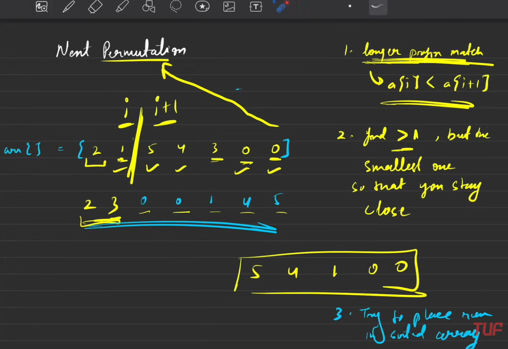

// C++ solution code goes here
vector<int> nextGreaterPermutation(vector<int> &A) {
// Write your code here.
int ind = -1;
int n = A.size();
//Step 1
//find the break point
for(int i = n-2; i >= 0; i--)
{
//we need next permutation, which will be greater number
//than current number
//So we are looking for that break point where A[i] < A[i+1]
if(A[i] < A[i+1])
{
ind = i;
break;
}
}
//Corner case if given input itself is the last permutation
//So we will reverse the number, to get the very first
//permutation, e.g. 5 4 3 2 1 -> 1 2 3 4 5
if (ind== -1) {
reverse(A.begin(), A.end());
return A;
}
//Step 2
//find the minimum number which is greater than A[ind]
for(int i = n-1; i > ind; i--)
{
if(A[ind] < A[i])
{
swap(A[ind], A[i]);
break;
}
}
//Step 3
//Reverse the Array from A[ind+1] -> A[n]
reverse(A.begin()+ind+1, A.end());
return A;
}
